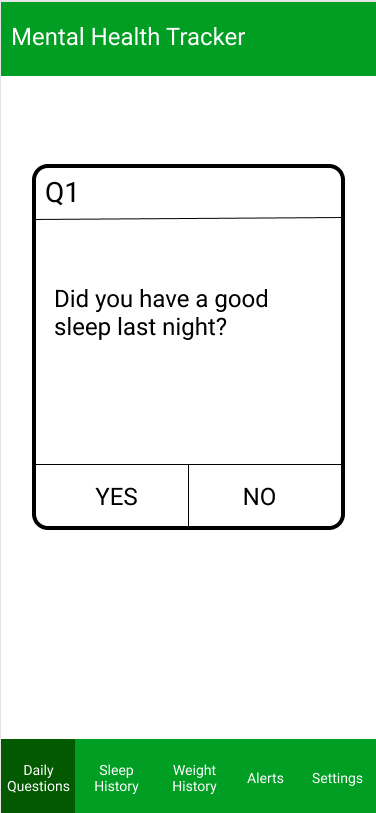
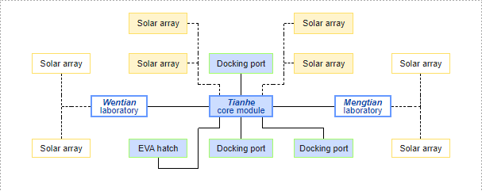

Areas of research: new advancement in space technology
Research question: Since it is the first space station launched since 1998, how can I raise people's interest in China's new space station?
Data drawing: a 3D interactive tour of the space station
Areas of research: mental health issue detection
Research question: How can I make it easier for people to detect their own mental health issues and get help?
Data drawing: a phone app to track mental health history
Areas of research: immediate feedback for creators
Research question: How can can I create tools to achieve dynamic data visualization, while still give creators immediate feedbacks?
Data drawing: a 3D version of Google Maps restaurant reviews
Chinese space station length: ~ 20.00m, diameter: ~ 4.20m
Structure:
Zung Self-Rating Depression Scale and its validity: Biggs, John T., Laurence T. Wylie, and Vincent E. Ziegler. 1978. “Validity of the Zung Self-Rating Depression Scale.” British Journal of Psychiatry 132 (4). Cambridge University Press: 381–85. doi:10.1192/bjp.132.4.381.
Creative tools to investigate: Reactable, Cuboino, Robolink, Figma, TouchDesigner
Characterizing Visual Programming Approaches for End-User Developers: A Systematic Review - Kuhail, Mohammad Amin, Shahbano Farooq, Rawad Hammad, and Mohammed Bahja. "Characterizing Visual Programming Approaches for End-User Developers: A Systematic Review." IEEE Access (2021).
Source of Information: China Manned Space Agency, Chinese and foreign media.
Audience: Who is my project's audience? What levels of knowledge do they have? What language do they speak?
Audience: Who is my project's audience? Do they have smartphones? What kinds of working environment are they in?
Audience: Who is my project's audience? Are they scientists? Artists? Engineers? Children learning to code? What levels of programming background do they have?
- Douglas Engelbart: founder of HCI, creator of mouse and network computers, precursors to graphical user interfaces. His work has enormous influence on how we interact with computers today.
- Bret Victor: Inspiring works and demos on visual programming and data visualization (http://worrydream.com/)
Surveys & Questionnaires (in first person)
Activity Analysis